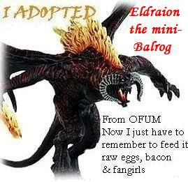

|
One evening, before she started PPCing, Luthy was at home alone. She was reading some pretty terrible fanfic. One particularly sordid Legolas/Aragorn slash kept referring to Eldarion as “Eldraion”. This pained Luthy’s eyes, but then, so did the rest of the fic, so she ignored it. The next morning, when Luthy awoke, she heard some screaming and giggling outside her window. She went outside, curiously, to see what a bunch of giggly teenage girls were doing below her window. They were poking at a little creature which appeared to be on fire. “Awwwww, itz so cute!!!!!!!111 lets name it LEgolas!!!!!!!!11111111” one of them exclaimed. “okay!!!!111111” said one of the others. “My Leggy!!” “no, miiinnee!!11” “Miiiinnee!!!” “Leggyy, marry meee!!” And then the little fellow started roaring. “ROAAAAAAAAAAAAAAAAAAAAAAR!!!!!!!!!!!!!!!!!!!!!!! *fire*” he said. “AAAAAAAAAH!!!!!!!!!!!!!1111111” screamed two of the Sues. “ack! leggy’s on fire!!!!!!!!11111” cried three more. “What are you doing to that poor mini-Balrog?” Luthy cried in dismay. “AHHHHHHHHHHH!!!!!!!!!!11111111 a evil being from beyond the abiss!!!11111111” said one Sue, and they all ran. “Awwwww,” said Luthy. “Poor little guy. They were tormenting you weren’t they? I’ve got some raw bacon if you’d like it…” He gave a pitiful little roar and then crawled over to her. He was clearly emotionally damaged. What’s your name, little guy?” she asked, but got no response. “Oh, I bet you’re Eldraion from last night, aren’t you? I’m so sorry the Sues got to you!” He mewled pitifully. And that was how Luthy got her mini. [A/N: That was so much fun to write, simply because it’s so terrible. Sil can tell you I died laughing a dozen times doing it. Fun!]     |